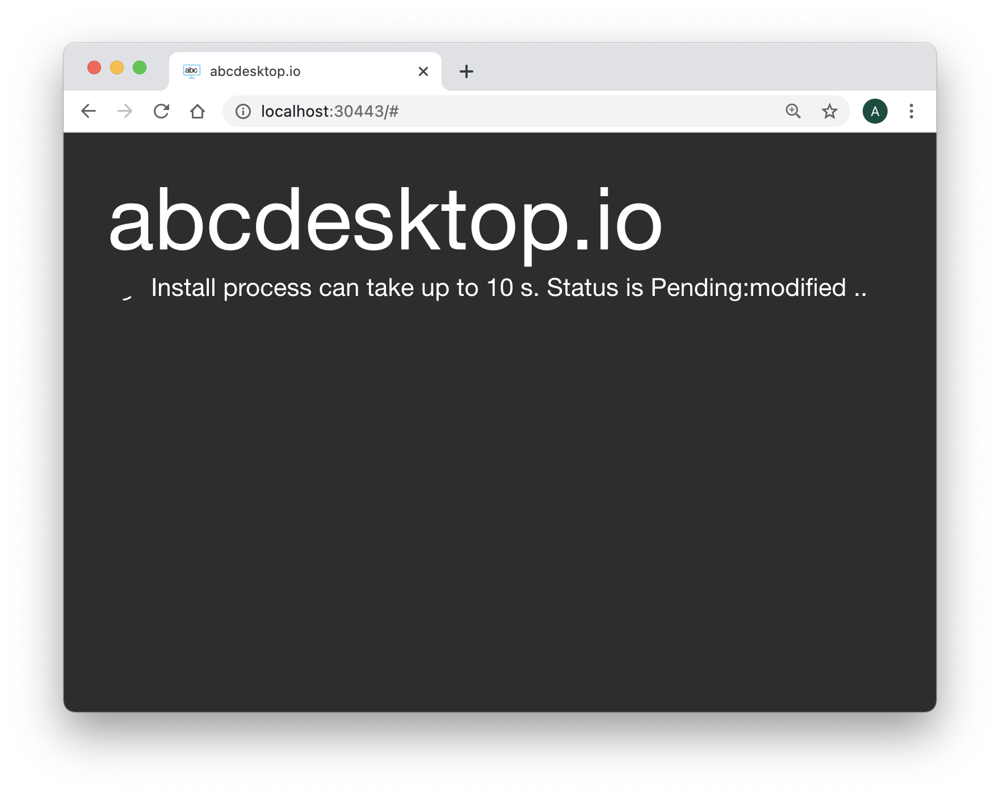
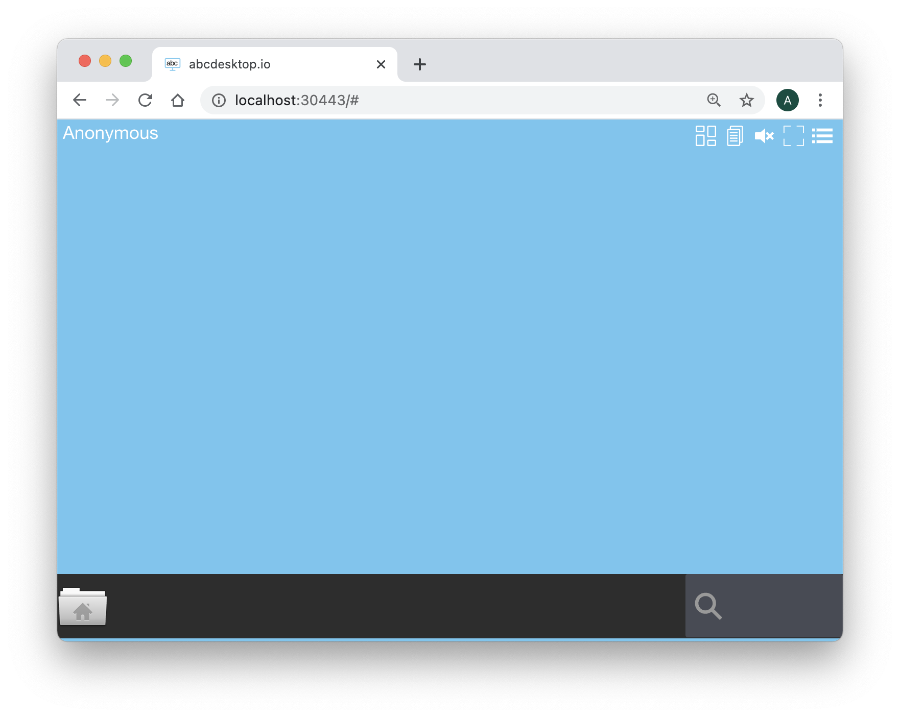

abcdesktop.io in kubernetes mode
abcdesktop.io support docker mode and kubernetes mode. In this section we will study how abcdabcdesktopio/esktop.io works in kubernetes mode. The abcdesktop.io kubernetes mode is recommended for enterprise use, all applications containers can be distributed on different hosts.
In kubernetes mode, the abcdesktop.io infrastructure use seven containers (oc.cups is optional), each container has a specific role :
| Container | Role | Image | From |
|---|---|---|---|
| oc.user | User container | abcdesktopio/oc.user.18.04 | abcdesktop.io |
| oc.cups | Printing container | abcdesktopio/oc.cupsd.18.04 | cups abcdesktop.io |
| oc.pyos | API Server | abcdesktopio/oc.pyos | abcdesktop.io |
| oc.nginx | Web Service (http proxy and http server) | abcdesktopio/oc.nginx | nginx abcdesktop.io |
| oc.speedtest | http benchmarch | abcdesktopio/oc.speedtest | LibreSpeed |
| oc.mongo | json database server | abcdesktopio/oc.mongo | MongoDB |
| memcached | cache server | memcached | Memcached |
Requirements
You need to have a Kubernetes cluster, and the kubectl command-line tool must be configured to communicate with your cluster. If you do not already have a cluster, you can create one by reading Kubernetes Setup. The command line openssl must be installed too.
You can run the Quick installation process or choose the Manually installation step by step
Quick installation (Linux or macOS)
Quick installation can be run on Linux or macOS operation system. For Microsoft Windows, please read the following chapter 'Manually installation step by step'
You can watch the youtube video sample. This video describes the Quick installation process.
Download and extract the latest release automatically (Linux or macOS):
curl -sL https://raw.githubusercontent.com/abcdesktopio/conf/main/kubernetes/install.sh | bash
The command above downloads the latest release (numerically) of abcdesktop.io. The quick installation process runs the all commands step by step:
- create the abcdesktop namespace
- build all rsa keys pairs for jwt signing and payload encryption
- create all services, pods, secrets and configmaps
- download user's core images: oc.user, oc.cupsd, oc.pulseaudio
- download some applications images sample: the LibreOffice suite (calc, writer, impress), Firefox, Gimp, and gnome-terminal.
You can also download the install.sh bash script, and read it and then run it.
Manually installation step by step (Linux, macOS or Windows)
The following commands will let you prepare and build abcdesktop plateform on the master node. All applications run on a single server.
Install abcdesktop
Step 1: Create abcdesktop namespace
We will create abcdesktop namespace and set it as default :
# First create the abcdesktop namespace
kubectl create namespace abcdesktop
You should read on the standard output
namespace/abcdesktop created
Option : To use the namespace
abcdestkopas default namespacekubectl config set-context $(kubectl config current-context) --namespace=abcdesktopAll kubectl commands will be executed with abcdesktop namespace.
This will avoid to add "-n abcdesktop" to all commands.
Step 2: Securized abcdesktop
All communications between nginx, pyos and user navigator are encrypted by JSON Web Tokens.
- The JSON Web Tokens payload is encrypted with the abcdesktop jwt desktop payload private by pyos
-
The JSON Web Tokens payload is decrypted with the abcdesktop jwt desktop payload public keys by nginx.
Please use the payload private as private key, and the payload public as private key. Do not publish the public key. This public key must stay private, this is a special case, this is not stupid, it's only a more secure option.
-
The JSON Web Tokens payload is signed with the abcdesktop jwt desktop signing private keys
-
The JSON Web Tokens payload is verified with the abcdesktop jwt desktop signing public keys.
-
The JSON Web Tokens user is signed with the abcdesktop jwt user signing private keys by pyos.
- The JSON Web Tokens user is verified with the abcdesktop jwt user signing public keys by pyos
As multiple pods of pyos can run simultaneously, the same private and public keys value are stored into kurbenetes secret.
The abcdesktop jwt desktop payload public key is read by nginx lua script and by pyos, export the public key using the RSAPublicKey_out option, to use the RSAPublicKey format. The RSAPublicKey format make key file format compatible between python and lua.
The following commands will let you create all necessary keys :
# build rsa kay pairs for jwt payload
# 1024 bits is a smallest value, change here if need but use more than 1024
openssl genrsa -out abcdesktop_jwt_desktop_payload_private_key.pem 1024
openssl rsa -in abcdesktop_jwt_desktop_payload_private_key.pem -outform PEM -pubout -out _abcdesktop_jwt_desktop_payload_public_key.pem
openssl rsa -pubin -in _abcdesktop_jwt_desktop_payload_public_key.pem -RSAPublicKey_out -out abcdesktop_jwt_desktop_payload_public_key.pem
# build rsa kay pairs for the desktop jwt signing
openssl genrsa -out abcdesktop_jwt_desktop_signing_private_key.pem 1024
openssl rsa -in abcdesktop_jwt_desktop_signing_private_key.pem -outform PEM -pubout -out abcdesktop_jwt_desktop_signing_public_key.pem
# build rsa kay pairs for the user jwt signing
openssl genrsa -out abcdesktop_jwt_user_signing_private_key.pem 1024
openssl rsa -in abcdesktop_jwt_user_signing_private_key.pem -outform PEM -pubout -out abcdesktop_jwt_user_signing_public_key.pem
Then, create the kubernetes secrets from the new key files:
# create the kubernetes rsa keys secret for abcdesktop
kubectl create secret generic abcdesktopjwtdesktoppayload --from-file=abcdesktop_jwt_desktop_payload_private_key.pem --from-file=abcdesktop_jwt_desktop_payload_public_key.pem --namespace=abcdesktop
kubectl create secret generic abcdesktopjwtdesktopsigning --from-file=abcdesktop_jwt_desktop_signing_private_key.pem --from-file=abcdesktop_jwt_desktop_signing_public_key.pem --namespace=abcdesktop
kubectl create secret generic abcdesktopjwtusersigning --from-file=abcdesktop_jwt_user_signing_private_key.pem --from-file=abcdesktop_jwt_user_signing_public_key.pem --namespace=abcdesktop
You should read on the standard output :
secret/abcdesktopjwtdesktoppayload created
secret/abcdesktopjwtdesktopsigning created
secret/abcdesktopjwtusersigning created
Only if you use a private registry or if the abcdesktop registry is private Create Secret to allow kubernetes to download abcdesktop images from docker registry.
For this part you need to change docker-username and docker-password by credentials provided by project owner. If you don't have this values, you will have to build abcdesktop images by yourself.change docker.json path if need /root/.docker/config.json
kubectl create secret generic abcdesktopregistrysecret --from-file=.dockerconfigjson=/root/.docker/config.json --type=kubernetes.io/dockerconfigjson -n abcdesktop
Verify Secrets
You can verify secrets creation with the following command :
kubectl get secrets -n abcdesktop
You should read on the standard output :
NAME TYPE DATA AGE
default-token-5zknd kubernetes.io/service-account-token 3 6m6s
abcdesktopjwtdesktoppayload Opaque 2 68s
abcdesktopjwtdesktopsigning Opaque 2 68s
abcdesktopjwtusersigning Opaque 2 67s
Step 3: Download core images, create Pods, and services
Pre download the three user default images, to make sure that Kubernetes will find the docker images at startup time.
docker pull abcdesktopio/oc.user.18.04
docker pull abcdesktopio/oc.cupsd.18.04
docker pull abcdesktopio/oc.pulseaudio.18.04
You should read on the standard output
oc.user.18.04: Pulling from abcdesktopio
...[cut here]...
docker.io/abcdesktopio/oc.user.18.04
oc.cupsd.18.04: Pulling from abcdesktopio
...[cut here]...
docker.io/abcdesktopio/oc.cupsd.18.04
oc.pulseaudio.18.04: Pulling from abcdesktopio
...[cut here]...
docker.io/abcdesktopio/oc.pulseaudio.18.04
Create the abcdesktop pods and services
abcdesktop.yaml file contains declarations for all roles, service account, pods, and services required for abcdesktop.
Run the command line
kubectl create -f https://raw.githubusercontent.com/abcdesktopio/conf/main/kubernetes/abcdesktop.yaml
You should read on the standard output
clusterrole.rbac.authorization.k8s.io/pyos-role created
clusterrolebinding.rbac.authorization.k8s.io/pyos-rbac created
serviceaccount/pyos-serviceaccount created
storageclass.storage.k8s.io/storage-local-abcdesktop created
persistentvolume/pv-volume-home-directory created
persistentvolumeclaim/persistentvolumeclaim-home-directory created
configmap/abcdesktop-config created
configmap/nginx-config created
deployment.apps/memcached-od created
secret/mongodb-secret created
statefulset.apps/mongodb-od created
daemonset.apps/daemonset-nginx created
deployment.apps/speedtest-od created
daemonset.apps/daemonset-pyos created
endpoints/desktop created
service/desktop created
service/memcached created
service/mongodb created
service/speedtest created
service/nginx created
service/pyos created
Verify Pods
Once the pods are created, all pods should be running.
For the first time, status maybe long to become running as some container images may be downloaded
kubectl get pods -n abcdesktop
You should read on the standard output
NAME READY STATUS RESTARTS AGE
daemonset-nginx-nfsbm 1/1 Running 0 29s
daemonset-pyos-8kvfp 1/1 Running 0 29s
memcached-od-5bf65bf745-j69lh 1/1 Running 0 29s
mongodb-od-6cbf8d74d-2rdmd 1/1 Running 0 29s
openldap-od-8dc9f56d8-wtlxl 1/1 Running 0 29s
speedtest-od-7cb7dd44f5-p947s 1/1 Running 0 29s
Connect your local abcdesktop
Open your navigator to http://[your-ip-hostname]:30443/
abcdesktop homepage should be available :

Click on the Connect with Anonymous access button. abcdesktop service pyos is creating a new desktop using the user container docker image oc.user.18.04.

Few seconds later, processes are ready to run. You should see the abcdesktop main screen, with only one application File Manager.

Great you have installed abcdesktop.io in Kubernetes mode. You just need a web browser to reach your web workspace. It' now time to add some container applications. Read the chapter add kubernetes contain
Troubleshoot
All kubernetes resources can be inspected to get more informations.
First list elements you want to verify, in the following case, we will inspect pods :
kubectl get pods -n abcdesktop
NAME READY STATUS RESTARTS AGE
daemonset-nginx-qnd4n 1/1 Running 0 92s
daemonset-pyos-6mgq4 1/1 Running 0 92s
memcached-od-db69c45fb-mqt4n 1/1 Running 0 92s
mongodb-od-ff874fcb5-sm6f7 1/1 Running 0 92s
speedtest-od-55c58fdd69-5znpr 0/1 ImagePullBackOff 0 92s
As we can see, status is "ImagePullBackOff" for speedtest-od pod.
We will then ask kubernetes to describe the pod with the following command :
kubectl describe pod speedtest-od-55c58fdd69-t99ck -n abcdesktop
In this case, the important information part is at the end (it's not always the case, you can also look at "Conditions:" section) :
Events:
Type Reason Age From Message
---- ------ ---- ---- -------
Warning Failed 7m6s (x4837 over 18h) kubelet, cube05 Error: ImagePullBackOff
Normal BackOff 2m9s (x4860 over 18h) kubelet, cube05 Back-off pulling image "registry.mydomain.local:443/oc.speedtest"
As we can see, in this case, Kubernetes had a problem to pull oc.speedtest image from registry.
Verify Daemonsets
kubectl get daemonsets -n abcdesktop
You should read on the standard output
NAME DESIRED CURRENT READY UP-TO-DATE AVAILABLE NODE SELECTOR AGE
daemonset-nginx 1 1 1 1 1 <none> 16m
daemonset-pyos 1 1 1 1 1 <none> 16m
Verify service ports
kubectl get services -n abcdesktop
You should read on the standard output
NAME TYPE CLUSTER-IP EXTERNAL-IP PORT(S) AGE
desktop ClusterIP None <none> <none> 17m
memcached ClusterIP 10.110.16.25 <none> 11211/TCP 17m
mongodb ClusterIP 10.110.49.161 <none> 27017/TCP 17m
nginx NodePort 10.102.13.5 <none> 80:30443/TCP 17m
openldap ClusterIP 10.108.52.65 <none> 389/TCP 17m
pyos ClusterIP 10.111.123.108 <none> 8000/TCP 17m
speedtest ClusterIP 10.101.137.100 <none> 80/TCP 17m
Verify cluster roles
kubectl describe ClusterRole pyos-role -n abcdesktop
You should read on the standard output
Name: pyos-role
Labels: <none>
Annotations: <none>
PolicyRule:
Resources Non-Resource URLs Resource Names Verbs
--------- ----------------- -------------- -----
pods/exec [] [] [create get list watch update patch delete]
pods [] [] [get list watch create update patch delete]
secrets [] [] [get list watch create update patch delete]
pods/log [] [] [get list watch]
nodes [] [] [get watch list]
Verify Cluster Role Bindind
kubectl describe ClusterRoleBinding pyos-rbac -n abcdesktop
You should read on the standard output
Name: pyos-rbac
Labels: <none>
Annotations: <none>
Role:
Kind: ClusterRole
Name: pyos-role
Subjects:
Kind Name Namespace
---- ---- ---------
ServiceAccount pyos-serviceaccount abcdesktop
View Pyos logs
kubectl logs daemonset-pyos-tklg8 --follow -n abcdesktop
Note that you also can view logs using docker command